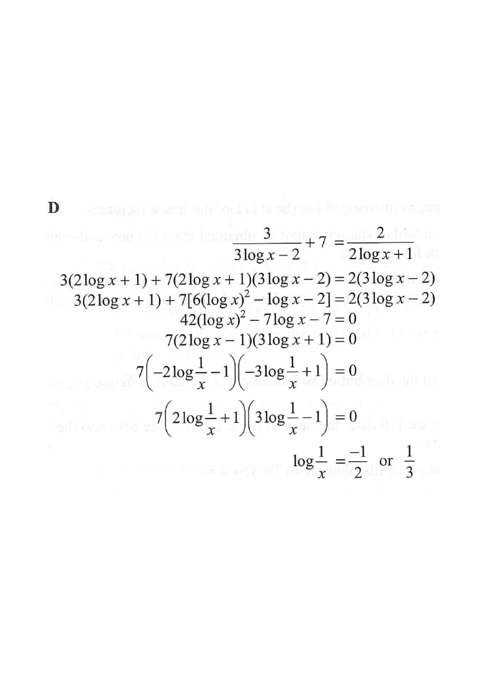

Scroll the solution → the figure highlights each stage.
log x axis
working value
final roots
reciprocal map
Question
If
$\dfrac{3}{3\log x-2}+7=\dfrac{2}{2\log x+1}$,
then $\log\dfrac{1}{x}=$
- A. $-3$ or $2$.
- B. $-2$ or $3$.
- C. $\dfrac{-1}{3}$ or $\dfrac{1}{2}$.
- D. $\dfrac{-1}{2}$ or $\dfrac{1}{3}$.

Figure (original exam diagram)
Step-by-step Solution
1Set $u=\log x$ and clear the fractions
Substitution to Reduce Degree
\(u=\log x\)
Writing \(u=\log x\) turns the equation in \(\log x\) into a rational equation in the single unknown \(u\).
Let $u=\log x$. Then
$\dfrac{3}{3u-2}+7=\dfrac{2}{2u+1}$.
Multiply both sides by $(3u-2)(2u+1)$:
$$3(2u+1)+7(3u-2)(2u+1)=2(3u-2).$$
Clear denominators in one move — this turns the equation into a plain quadratic.
2Expand and collect terms
$(3u-2)(2u+1)=6u^{2}-u-2$, so
$$3(2u+1)+7(6u^{2}-u-2)=2(3u-2)$$
$$6u+3+42u^{2}-7u-14=6u-4$$
$$42u^{2}-7u-7=0.$$
Everything cancels neatly into a quadratic in $u=\log x$.
3Factorise the quadratic
Factorising a Quadratic
\(6u^{2}-u-1=(2u-1)(3u+1)\)
The quadratic in \(u\) factorises, giving \(u=\dfrac{1}{2}\) or \(u=-\dfrac{1}{3}\).
$$42u^{2}-7u-7=0 \;\Longrightarrow\; 7\left(6u^{2}-u-1\right)=0
\;\Longrightarrow\; 7(2u-1)(3u+1)=0.$$
So $u=\dfrac{1}{2}$ or $u=-\dfrac{1}{3}$.
$u=\log x$ is just a number — factorise it like any quadratic.
4Convert back: $\log\frac{1}{x}=-\log x=-u$
Logarithm of a Reciprocal
\(\log\dfrac{1}{x}=\log x^{-1}=-\log x\)
So \(\log\dfrac{1}{x}=-u\), i.e. \(-\dfrac{1}{2}\) or \(\dfrac{1}{3}\).
$$\log\frac{1}{x}=\log x^{-1}=-\log x=-u.$$
Therefore
$$\log\frac{1}{x}=-\frac{1}{2}\quad\text{or}\quad \frac{1}{3}.$$
Do NOT forget the sign flip from the reciprocal — this is where marks are lost.
Answer: D — $\log\dfrac{1}{x}=-\dfrac{1}{2}$ or $\dfrac{1}{3}$
PRACTICESimilar question — try it yourself
Question. If \(\dfrac{2}{\log x-1}+\dfrac{3}{\log x+2}=2\), then \(\log\dfrac{1}{x}=\)
Show the worked solution
Step 1. Let \(u=\log x\). The equation becomes \(\dfrac{2}{u-1}+\dfrac{3}{u+2}=2\).
Step 2. Multiply both sides by \((u-1)(u+2)\): \(2(u+2)+3(u-1)=2(u-1)(u+2)\), i.e. \(5u+1=2u^{2}+2u-4\).
Step 3. Collect terms: \(2u^{2}-3u-5=0\), which factorises as \((2u-5)(u+1)=0\). Hence \(u=\dfrac{5}{2}\) or \(u=-1\).
Step 4. Since \(\log\dfrac{1}{x}=-u\), the values are \(-\dfrac{5}{2}\) or \(1\).
Step 5. Check \(u=\dfrac{5}{2}\): \(\dfrac{2}{1.5}+\dfrac{3}{4.5}=\dfrac{4}{3}+\dfrac{2}{3}=2\) ✓.
Answer: \(-\dfrac{5}{2}\) or \(1\)